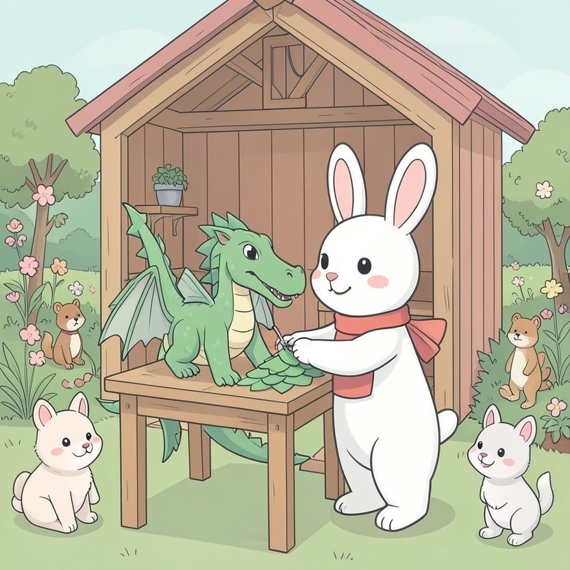

Titistoire › Les Étoiles (3-6 ans)
Rosie et le déguisement qui a fondu
Une histoire de Rosie la lapine pour parler de : quand tout rate.

▶ Écouter et regarder l'histoire
Gratuit, sans inscription : la voix lit, le texte suit mot à mot, les images tournent comme dans un album.
Le texte de l'histoire
Cette année, Rosie va gagner le concours de déguisements d'Halloween. C'est décidé. Voilà un mois qu'elle y travaille en secret, à la lueur d'une lampe, dans la remise du jardin.
C'est un dragon. Un dragon somptueux, tout en papier : des écailles vertes collées une à une, une queue hérissée de pointes, et des ailes qui se déplient comme des éventails.
« Il est parfait, se félicite Rosie, les poings sur les hanches. Pas une écaille de travers. Personne n'aura jamais vu un déguisement pareil. »
Le soir d'Halloween, elle enfile son dragon. « Un, deux, trois, partez ! » En route pour la clairière. Sur son passage, tout le monde se retourne. « Oooh ! » Rosie se pavane, la tête haute.
Elle ne voit pas le gros nuage noir qui s'amoncelle dans son dos. Ploc. Une goutte sur son museau. Ploc, ploc. Deux gouttes sur ses ailes.
Et d'un seul coup, toute la pluie du ciel s'abat sur la forêt.
Rosie détale. Mais le papier, ça n'aime pas l'eau. Les écailles se décollent une à une. La peinture verte ruisselle le long de ses pattes. La queue pendouille comme une vieille chaussette.
Quand elle s'abrite enfin sous le grand chêne, elle n'est plus un dragon. C'est une lapine toute verte, trempée jusqu'aux os, avec des bouts de papier mouillé collés partout.
« Mon dragon ! Un mois de travail ! Tout est fichu ! C'est la pire soirée de ma vie ! » Elle se laisse tomber dans une flaque, les oreilles aplaties. Rosie ne veut plus rien.
Ses amis accourent. « Prends mon chapeau de citrouille », propose Nestor. « Mon bandeau de pirate ! » ajoute Filou. Plume, sans un mot, lui tend sa cape de sorcière.
« Non ! C'est pas ça que je voulais ! Je voulais MON dragon, comme je l'avais prévu ! » Rosie croise les bras et leur tourne le dos. « Je rentre. Halloween est annulé. »
Du coin de l'œil, elle regarde ses pattes vertes. Les bouts de papier. La cape, le bandeau, le chapeau, que ses amis lui tendent toujours. Dans sa tête, une toute petite idée pointe le bout du nez.
Elle se penche sur la flaque. Dedans la regarde une créature verte et dégoulinante, couverte de lambeaux. Ce n'est pas un dragon. C'est… autre chose.
« Dis donc, murmure Rosie. Je ressemble à un monstre des marais. » D'un geste, elle jette la cape sur ses épaules. Le bandeau. Le chapeau de citrouille par-dessus. « Un monstre des marais, sorcier et pirate. »
Filou s'esclaffe. « Avec des algues, ce serait encore mieux ! » Rosie ramasse une poignée de feuilles mouillées et se les plaque sur les oreilles. Splatch !
Tout le monde s'y met. Nestor lui dessine des moustaches de boue. Plume lui passe un collier de glands. Rosie se plante une branche sur la tête, en guise de corne.
Plus il y en a, plus c'est affreux. Plus c'est affreux, plus ils se tordent de rire. Rosie n'avait rien prévu de tout ça. Et c'est justement ce qui est drôle.
« Comment il s'appelle, ton monstre ? » demande Plume. Rosie réfléchit, puis lève la patte d'un air solennel. « Le Gloubidragon des marais. Il n'existe qu'un soir par an. Et seulement quand il pleut. »
La pluie cesse. Le concours commence. Sur l'estrade défilent des fantômes très propres, des sorcières bien repassées, un squelette impeccable.
Puis le Gloubidragon grimpe sur la scène, en semant de petites flaques vertes derrière lui. Il pousse un rugissement : « GLOUBIII ! » Les petits hurlent de frayeur et de joie.
La vieille Mathurine, qui préside le jury, essuie longuement ses lunettes. « En cent ans de concours, je n'ai jamais rien vu d'aussi dégoûtant. Bravo. »
Rosie a-t-elle gagné ? Elle a reçu le prix du monstre le plus original. Le premier prix, lui, est allé au squelette. Mais dans son bain tout vert, sous l'œil de Pompon, Rosie s'en moque bien.
Le soir, il faut trois bains pour venir à bout de tout ce vert. L'eau de la baignoire ressemble à de la soupe aux épinards. Pompon, la langue tirée, veut y goûter.
De son dragon, Rosie a gardé une seule écaille, toute gondolée, au fond d'une boîte. L'année prochaine, elle préparera encore un déguisement parfait. Mais elle emportera un petit pot de boue. Au cas où.